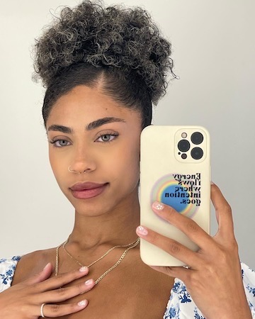

|  |
Venus Marquez
Content Creator, Fiancé and Pet Mom.
I have been a Content Creator for over 9 years through various online
platforms. Some of these platforms include Facebook, Instagram and
Tiktok.
Through these platforms I have amassed over 600,000 followers total.
I am also engaged to be married to my beautiful fiancé, Maggie Walsh.
Her and I have been together for over 2 years and are eager to begin
planning for our wedding. Both Maggie and I have been awarded the luxury of raising two beautiful pets together, Pluto and Frankie.
Both of which are complete and total opposites of each other. Pluto is our grumpy and rambunctious 4 year old male Tabby Cat.
Frankie is our sweet and cuddly little female Dachshund.
My Hobbies
- Crocheting
- Gaming
- Reading
|